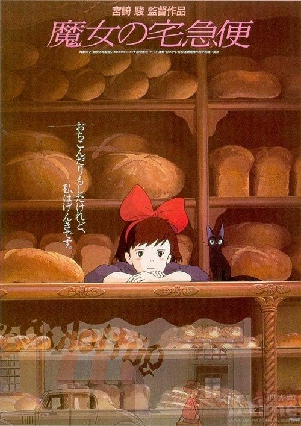

HOME

Kiki's Delivery Service
《魔女宅急便》
(1989)
《魔女宅急便》是由吉卜力工作室制作，宫崎骏执导、制作与编剧。在1989年7月29日首映的日本奇幻动画电影，电影剧情根据角野荣子在1985年的同名小说改编。电影改编其中故事。《魔女宅急便》讲述了年轻的魔女琪琪，离开家乡展开独立生活的成长过程并描绘出日本青春期女孩在孤独与挫折中，找寻与现实共处的故事。《魔女宅急便》在日本上映后，获得了Animage漫画大奖。这是华特迪士尼公司和吉卜力工作室以合作伙伴关系下发行的第一部电影。华特迪士尼影业在1997年制作了英文配音版并在1998年5月23日的西雅图国际电影节于美国戏院首映。